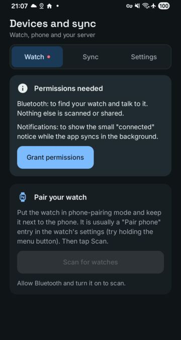
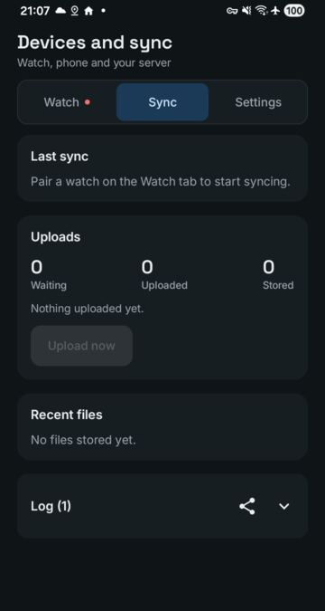
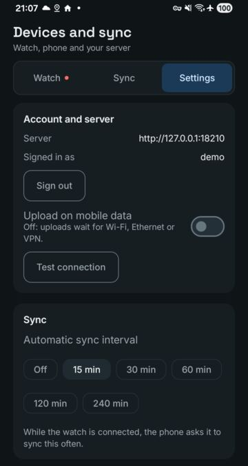
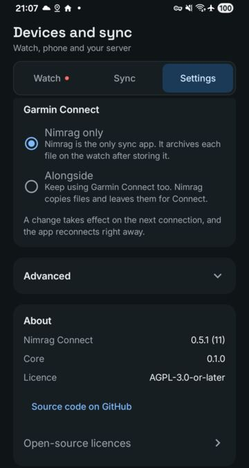
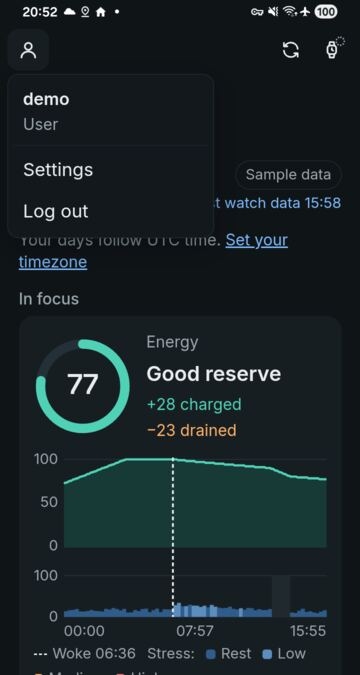
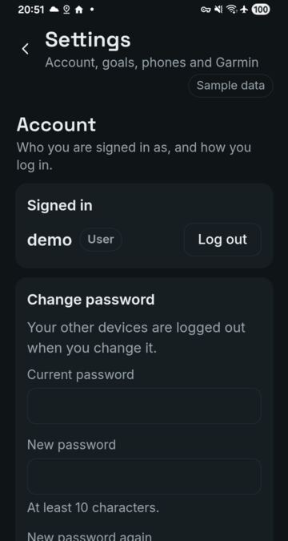
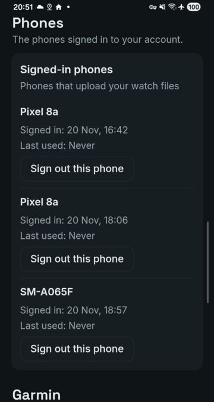
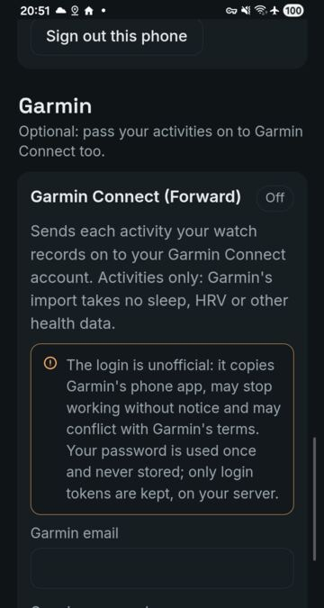
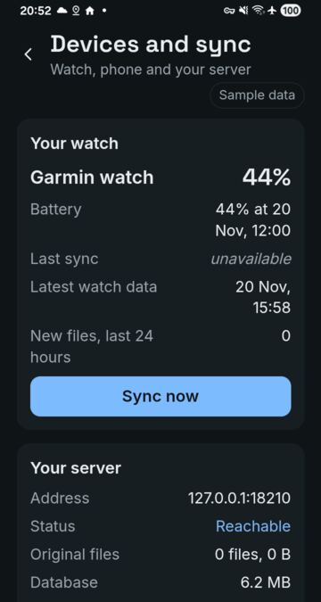
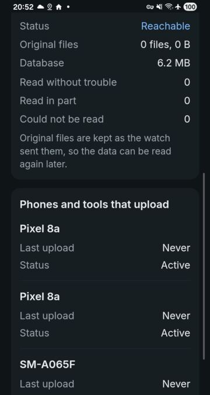

<title>Nimrag Settings Redesign</title>
<meta name="claude:viewport-fit-sides" content="cover">
<link rel="preconnect" href="https://fonts.googleapis.com">
<link rel="stylesheet" href="https://fonts.googleapis.com/css2?family=Inter:wght@400;500;600&family=Space+Grotesk:wght@500;600;700&display=swap">
<style>
/* Layout: a single reading column for the argument, widening to phone-frame rows for before shots and mockups. */
:root {
  --bg: #f4f6f7; --fg: #142026; --muted: #56656c; --rule: #d9e0e3; --panel: #ffffff; --accent: #2f7fd6; --bad: #c4462f; --good: #1f8f74;
  --font-body: 'Inter', system-ui, -apple-system, 'Segoe UI', sans-serif;
  --font-display: 'Space Grotesk', 'Inter', system-ui, sans-serif;
  /* The app's own palette, fixed: mockups always show the app's dark look. */
  --a-bg: #0f1417; --a-card: #171e22; --a-line: #243037; --a-text: #e8edee; --a-text2: #9aa7ac; --a-accent: #7dbbff; --a-energy: #4fd1b5; --a-warn: #ffb066; --a-heart: #ff6b6b;
}
@media (prefers-color-scheme: dark) { :root:not([data-theme="light"]) { --bg: #0b1013; --fg: #e3e9eb; --muted: #93a2a8; --rule: #233038; --panel: #121a1e; --accent: #7dbbff; --bad: #ff8a73; --good: #4fd1b5; color-scheme: dark } }
:root[data-theme="dark"] { --bg: #0b1013; --fg: #e3e9eb; --muted: #93a2a8; --rule: #233038; --panel: #121a1e; --accent: #7dbbff; --bad: #ff8a73; --good: #4fd1b5; color-scheme: dark }
* { box-sizing: border-box }
body { background: var(--bg); color: var(--fg); font: 16px/1.6 var(--font-body); padding-left: max(16px, env(safe-area-inset-left, 0px)); padding-right: max(16px, env(safe-area-inset-right, 0px)); padding-block: 40px 80px }
main { max-width: 1120px; margin: 0 auto; display: flex; flex-direction: column; gap: 56px }
.prose { max-width: 68ch }
h1, h2, h3 { font-family: var(--font-display); text-wrap: balance; line-height: 1.15; margin: 0 }
h1 { font-size: clamp(2rem, 5vw, 3rem); letter-spacing: -0.02em }
h2 { font-size: 1.6rem; margin-bottom: 12px }
h3 { font-size: 1.1rem; margin-bottom: 6px }
p { margin: 0 0 12px }
.eyebrow { font-size: .78rem; text-transform: uppercase; letter-spacing: .08em; color: var(--muted); font-weight: 600; margin-bottom: 10px }
.lede { font-size: 1.15rem; color: var(--muted); max-width: 62ch; margin-top: 14px }
section { display: flex; flex-direction: column; gap: 18px }
.strip { display: flex; gap: 16px; overflow-x: auto; padding-bottom: 8px; scroll-snap-type: x proximity }
.shot { flex: none; width: 220px; scroll-snap-align: start; display: flex; flex-direction: column; gap: 8px }
.shot img { width: 100%; border-radius: 14px; border: 1px solid var(--rule); display: block }
.shot figcaption { font-size: .84rem; color: var(--muted); line-height: 1.4 }
figure { margin: 0 }
.issues { display: grid; grid-template-columns: repeat(auto-fit, minmax(260px, 1fr)); gap: 14px }
.issue { background: var(--panel); border: 1px solid var(--rule); border-radius: 12px; padding: 16px 18px; min-width: 0 }
.issue h3 { display: flex; gap: 10px; align-items: baseline }
.issue h3 span { font-family: var(--font-body); font-size: .8rem; color: var(--bad); font-weight: 600 }
.issue p { font-size: .94rem; color: var(--muted); margin: 0 }
.rules { display: grid; grid-template-columns: repeat(auto-fit, minmax(300px, 1fr)); gap: 0 32px }
.rules ul { margin: 0; padding-left: 18px }
.rules li { margin-bottom: 8px; font-size: .96rem }
.src { font-size: .85rem; color: var(--muted) }
.src a { color: var(--accent) }
.map { display: grid; grid-template-columns: repeat(auto-fit, minmax(230px, 1fr)); gap: 14px }
.map div { background: var(--panel); border: 1px solid var(--rule); border-radius: 12px; padding: 16px 18px; min-width: 0 }
.map b { font-family: var(--font-display); font-size: 1.05rem; display: block; margin-bottom: 4px }
.map p { font-size: .92rem; color: var(--muted); margin: 0 0 8px }
.map ul { margin: 0; padding-left: 18px; font-size: .9rem }
.mocks { display: flex; gap: 22px; overflow-x: auto; padding-bottom: 10px; scroll-snap-type: x proximity }
.mock { flex: none; width: 300px; scroll-snap-align: start; display: flex; flex-direction: column; gap: 10px }
.mock > p { font-size: .86rem; color: var(--muted); margin: 0; line-height: 1.45 }
table { border-collapse: collapse; width: 100%; font-size: .93rem }
.tablewrap { overflow-x: auto }
th, td { text-align: left; padding: 10px 12px; border-bottom: 1px solid var(--rule); vertical-align: top }
th { font-size: .78rem; text-transform: uppercase; letter-spacing: .06em; color: var(--muted) }
td:first-child { color: var(--muted) }
ol.plan { margin: 0; padding-left: 20px; max-width: 72ch }
ol.plan li { margin-bottom: 10px }
.ask { background: var(--panel); border: 1px solid var(--rule); border-left: 4px solid var(--accent); border-radius: 10px; padding: 16px 20px; max-width: 72ch }

/* ---- phone mockups: the app's dark look ---- */
.phone { background: var(--a-bg); color: var(--a-text); border-radius: 26px; border: 6px solid #2a3338; padding: 14px 12px 0; height: 600px; overflow: hidden; display: flex; flex-direction: column; font: 13px/1.4 var(--font-body); position: relative }
.p-top { display: flex; align-items: center; gap: 10px; padding: 2px 4px 12px }
.p-top h4 { margin: 0; font: 600 19px/1.1 var(--font-display); color: var(--a-text) }
.p-top .sub { font-size: 11.5px; color: var(--a-text2) }
.p-scroll { flex: 1; overflow: hidden; display: flex; flex-direction: column; gap: 10px }
.p-card { background: var(--a-card); border-radius: 16px; padding: 14px }
.p-grp { background: var(--a-card); border-radius: 16px; overflow: hidden }
.p-h { font-size: 11px; text-transform: uppercase; letter-spacing: .07em; color: var(--a-text2); padding: 4px 6px 0; font-weight: 600 }
.row { display: flex; align-items: center; gap: 12px; padding: 11px 14px; min-height: 52px }
.row + .row { border-top: 1px solid var(--a-line) }
.ic { width: 32px; height: 32px; border-radius: 10px; background: #1f2a30; display: grid; place-items: center; flex: none; color: var(--a-accent) }
.ic svg { width: 18px; height: 18px }
.rt { flex: 1; min-width: 0 }
.rt b { display: block; font-weight: 500; font-size: 13.5px; color: var(--a-text) }
.rt span { display: block; font-size: 11.5px; color: var(--a-text2) }
.chev { color: var(--a-text2); width: 16px; height: 16px; flex: none }
.val { font-size: 12px; color: var(--a-text2); white-space: nowrap }
.sw { width: 36px; height: 20px; border-radius: 10px; background: #2c383e; position: relative; flex: none }
.sw::after { content: ""; position: absolute; left: 3px; top: 3px; width: 14px; height: 14px; border-radius: 50%; background: #9aa7ac }
.sw.on { background: #2d5f8f } .sw.on::after { left: 19px; background: var(--a-accent) }
.btn { display: block; text-align: center; background: var(--a-accent); color: #0b1a29; font-weight: 600; border-radius: 12px; padding: 11px; font-size: 14px }
.btn.ghost { background: transparent; color: var(--a-accent); border: 1px solid var(--a-line) }
.chip { display: inline-flex; align-items: center; gap: 6px; font-size: 11.5px; border-radius: 999px; padding: 3px 9px; background: #15302a; color: var(--a-energy) }
.chip::before { content: ""; width: 6px; height: 6px; border-radius: 50%; background: currentColor }
.chip.warn { background: #3a2a18; color: var(--a-warn) }
.hero { display: flex; gap: 14px; align-items: center }
.hero svg.watch { width: 72px; height: 72px; flex: none }
.hero h5 { margin: 0 0 4px; font: 600 18px var(--font-display) }
.meta { display: flex; justify-content: space-between; color: var(--a-text2); font-size: 12px; margin: 12px 0 }
.meta b { color: var(--a-text); font-weight: 600 }
.bar { height: 5px; border-radius: 3px; background: #22303a; overflow: hidden; margin: 10px 0 6px }
.bar i { display: block; height: 100%; width: 60%; background: var(--a-accent) }
.banner { display: flex; gap: 10px; align-items: center; background: #2b2216; border-radius: 14px; padding: 10px 12px; color: var(--a-warn); font-size: 12.5px }
.banner b { color: var(--a-text); font-weight: 500 }
.banner .mini { margin-left: auto; background: var(--a-warn); color: #261a08; font-weight: 600; border-radius: 8px; padding: 6px 10px; font-size: 12px; white-space: nowrap }
.danger b { color: var(--a-heart) }
.foot { text-align: center; color: var(--a-accent); font-size: 12.5px; padding: 4px 0 2px }
.step { display: flex; gap: 12px; padding: 10px 14px; align-items: flex-start }
.step + .step { border-top: 1px solid var(--a-line) }
.dot { width: 24px; height: 24px; border-radius: 50%; display: grid; place-items: center; font-size: 12px; font-weight: 600; flex: none; background: #22303a; color: var(--a-text2) }
.dot.ok { background: #15302a; color: var(--a-energy) }
.dot.now { background: var(--a-accent); color: #0b1a29 }
.avatar { width: 56px; height: 56px; border-radius: 50%; background: #23415f; color: var(--a-accent); display: grid; place-items: center; font: 600 24px var(--font-display); flex: none }
.radio { width: 18px; height: 18px; border-radius: 50%; border: 2px solid #56656c; flex: none }
.radio.on { border-color: var(--a-accent); box-shadow: inset 0 0 0 3px var(--a-card), inset 0 0 0 9px var(--a-accent) }
.tabbar { display: flex; justify-content: space-around; border-top: 1px solid var(--a-line); padding: 8px 0 10px; color: var(--a-text2); font-size: 10.5px; margin: 0 -12px; background: var(--a-bg) }
.tabbar span.on { color: var(--a-accent) }
/* desktop web mock */
.desk { background: var(--a-bg); color: var(--a-text); border-radius: 14px; border: 1px solid #2a3338; display: grid; grid-template-columns: 200px 1fr; min-height: 430px; font: 13px/1.4 var(--font-body); overflow: hidden; min-width: 720px }
.desk nav { border-right: 1px solid var(--a-line); padding: 18px 10px; display: flex; flex-direction: column; gap: 2px }
.desk nav a { padding: 8px 12px; border-radius: 8px; color: var(--a-text2); text-decoration: none }
.desk nav a.on { background: #1d2a33; color: var(--a-text) }
.desk .body { padding: 22px 28px; display: flex; flex-direction: column; gap: 14px; max-width: 620px }
.desk h4 { margin: 0; font: 600 20px var(--font-display) }
.deskwrap { overflow-x: auto }
@media (prefers-reduced-motion: no-preference) { .strip, .mocks { scroll-behavior: smooth } }
a:focus-visible { outline: 2px solid var(--accent); outline-offset: 2px }
</style>

<svg width="0" height="0" style="position:absolute" aria-hidden="true">
  <defs>
    <symbol id="i-chev" viewBox="0 0 24 24"><path d="M9 6l6 6-6 6" fill="none" stroke="currentColor" stroke-width="2" stroke-linecap="round" stroke-linejoin="round"/></symbol>
    <symbol id="i-sync" viewBox="0 0 24 24"><path d="M20 11a8 8 0 0 0-14.5-4.5M4 13a8 8 0 0 0 14.5 4.5M5 3v4h4M19 21v-4h-4" fill="none" stroke="currentColor" stroke-width="1.8" stroke-linecap="round" stroke-linejoin="round"/></symbol>
    <symbol id="i-signal" viewBox="0 0 24 24"><path d="M5 18v-3M10 18v-6M15 18V9M20 18V5" fill="none" stroke="currentColor" stroke-width="2" stroke-linecap="round"/></symbol>
    <symbol id="i-link" viewBox="0 0 24 24"><path d="M10 14a4 4 0 0 0 5.7 0l3-3a4 4 0 0 0-5.7-5.7l-1 1M14 10a4 4 0 0 0-5.7 0l-3 3a4 4 0 0 0 5.7 5.7l1-1" fill="none" stroke="currentColor" stroke-width="1.8" stroke-linecap="round"/></symbol>
    <symbol id="i-info" viewBox="0 0 24 24"><circle cx="12" cy="12" r="9" fill="none" stroke="currentColor" stroke-width="1.8"/><path d="M12 11v5M12 8h.01" fill="none" stroke="currentColor" stroke-width="2" stroke-linecap="round"/></symbol>
    <symbol id="i-list" viewBox="0 0 24 24"><path d="M8 6h12M8 12h12M8 18h12M4 6h.01M4 12h.01M4 18h.01" fill="none" stroke="currentColor" stroke-width="2" stroke-linecap="round"/></symbol>
    <symbol id="i-server" viewBox="0 0 24 24"><rect x="4" y="4" width="16" height="7" rx="2" fill="none" stroke="currentColor" stroke-width="1.8"/><rect x="4" y="13" width="16" height="7" rx="2" fill="none" stroke="currentColor" stroke-width="1.8"/><path d="M8 7.5h.01M8 16.5h.01" stroke="currentColor" stroke-width="2.4" stroke-linecap="round"/></symbol>
    <symbol id="i-lock" viewBox="0 0 24 24"><rect x="5" y="11" width="14" height="9" rx="2" fill="none" stroke="currentColor" stroke-width="1.8"/><path d="M8 11V8a4 4 0 0 1 8 0v3" fill="none" stroke="currentColor" stroke-width="1.8"/></symbol>
    <symbol id="i-shield" viewBox="0 0 24 24"><path d="M12 3l7 3v6c0 4-3 7.5-7 9-4-1.5-7-5-7-9V6z" fill="none" stroke="currentColor" stroke-width="1.8" stroke-linejoin="round"/><path d="M9 12l2 2 4-4" fill="none" stroke="currentColor" stroke-width="1.8" stroke-linecap="round" stroke-linejoin="round"/></symbol>
    <symbol id="i-phone" viewBox="0 0 24 24"><rect x="7" y="3" width="10" height="18" rx="2" fill="none" stroke="currentColor" stroke-width="1.8"/><path d="M11 18h2" stroke="currentColor" stroke-width="1.8" stroke-linecap="round"/></symbol>
    <symbol id="i-globe" viewBox="0 0 24 24"><circle cx="12" cy="12" r="9" fill="none" stroke="currentColor" stroke-width="1.8"/><path d="M3 12h18M12 3c3 3.5 3 14.5 0 18M12 3c-3 3.5-3 14.5 0 18" fill="none" stroke="currentColor" stroke-width="1.5"/></symbol>
    <symbol id="i-target" viewBox="0 0 24 24"><circle cx="12" cy="12" r="8.5" fill="none" stroke="currentColor" stroke-width="1.8"/><circle cx="12" cy="12" r="4" fill="none" stroke="currentColor" stroke-width="1.8"/></symbol>
    <symbol id="i-ruler" viewBox="0 0 24 24"><path d="M4 16L16 4l4 4L8 20z M8 12l2 2M11 9l2 2M14 6l2 2" fill="none" stroke="currentColor" stroke-width="1.6" stroke-linejoin="round"/></symbol>
    <symbol id="i-send" viewBox="0 0 24 24"><path d="M4 12l16-8-6 16-2-7z" fill="none" stroke="currentColor" stroke-width="1.8" stroke-linejoin="round"/></symbol>
    <symbol id="i-down" viewBox="0 0 24 24"><path d="M12 4v11M7 10l5 5 5-5M5 20h14" fill="none" stroke="currentColor" stroke-width="1.8" stroke-linecap="round" stroke-linejoin="round"/></symbol>
    <symbol id="i-out" viewBox="0 0 24 24"><path d="M14 4h4a2 2 0 0 1 2 2v12a2 2 0 0 1-2 2h-4M10 16l-4-4 4-4M6 12h10" fill="none" stroke="currentColor" stroke-width="1.8" stroke-linecap="round" stroke-linejoin="round"/></symbol>
    <symbol id="i-bt" viewBox="0 0 24 24"><path d="M7 7l10 10-5 4V3l5 4L7 17" fill="none" stroke="currentColor" stroke-width="1.8" stroke-linecap="round" stroke-linejoin="round"/></symbol>
    <symbol id="i-watch" viewBox="0 0 80 80"><rect x="27" y="4" width="26" height="14" rx="4" fill="#2a3a44"/><rect x="27" y="62" width="26" height="14" rx="4" fill="#2a3a44"/><circle cx="40" cy="40" r="24" fill="#1d2a32" stroke="#7dbbff" stroke-width="3"/><circle cx="40" cy="40" r="17" fill="#0f1417"/><path d="M40 29v11l7 5" fill="none" stroke="#7dbbff" stroke-width="3" stroke-linecap="round"/><rect x="64" y="34" width="5" height="12" rx="2" fill="#2a3a44"/></symbol>
  </defs>
</svg>

<main>
  <header>
    <div class="eyebrow">Nimrag Connect · design proposal · 20 Nov 2026</div>
    <h1>Watch, profile and settings, made calmer</h1>
    <p class="lede">The three places you change things grew one card at a time. This proposal gives each a clear job, shows the current value of every setting in one line, and moves the long explanations and rarely used details one tap further away.</p>
  </header>

  <section>
    <h2>How it looks today</h2>
    <p class="prose">Captured in the app on the Samsung at normal text size, with no watch paired on that phone.</p>
    <div class="strip" role="list" aria-label="Current screens">
      <figure class="shot" role="listitem"><figcaption>Watch tab: two text blocks and a disabled Scan button.</figcaption></figure>
      <figure class="shot" role="listitem"><figcaption>Sync tab: 0 / 0 / 0 and a greyed Upload now.</figcaption></figure>
      <figure class="shot" role="listitem"><figcaption>Phone settings: raw server address, chips over two rows.</figcaption></figure>
      <figure class="shot" role="listitem"><figcaption>Connect mode: each choice is a paragraph.</figcaption></figure>
      <figure class="shot" role="listitem"><figcaption>Profile menu: name, Settings, Log out.</figcaption></figure>
      <figure class="shot" role="listitem"><figcaption>Settings: password fields always open.</figcaption></figure>
      <figure class="shot" role="listitem"><figcaption>Two phones called "Pixel 8a", no way to tell which.</figcaption></figure>
      <figure class="shot" role="listitem"><figcaption>Garmin login form and a warning inline.</figcaption></figure>
      <figure class="shot" role="listitem"><figcaption>A second "Devices and sync" page on the web.</figcaption></figure>
      <figure class="shot" role="listitem"><figcaption>"Read in part" and "Could not be read" counters.</figcaption></figure>
    </div>

    <div class="issues">
      <div class="issue"><h3>The same thing in three places <span>structure</span></h3><p>Sign out, the server and the phones list appear in phone Settings, web Settings, the profile menu and the web Devices page. Two pages are both called "Devices and sync".</p></div>
      <div class="issue"><h3>Paragraphs instead of values <span>copy</span></h3><p>Permissions, pairing, the Connect mode and the Forward warning are written out in full every time. You read a page to learn a single setting.</p></div>
      <div class="issue"><h3>Forms that never close <span>layout</span></h3><p>Password and Garmin login fields stay open on a long page that ends in one "Save settings" button for unrelated things.</p></div>
      <div class="issue"><h3>Builder details on show <span>content</span></h3><p>127.0.0.1:18210, core version, capability bits, file parse counters and the raw log sit next to everyday settings.</p></div>
      <div class="issue"><h3>Empty states that look broken <span>states</span></h3><p>Zero counters, a disabled Upload now and a disabled Scan button with its reason in small print underneath.</p></div>
      <div class="issue"><h3>Everything weighs the same <span>visual</span></h3><p>Every setting is its own card with a bold title. No icons, three button styles, and the profile is a bare popover.</p></div>
    </div>
  </section>

  <section>
    <h2>What the research says</h2>
    <div class="rules">
      <div>
        <h3>Android's settings guidelines</h3>
        <ul>
          <li>Show each setting's <b>current value</b> as a short subtitle, not a description.</li>
          <li>Keep a screen to about <b>10–15 items</b>, most used at the top; group related rows with dividers and specific headings.</li>
          <li>Longer explanations go on a <b>second screen</b> or a help link.</li>
          <li>One home per setting: if it's needed in two places, both <b>link to the same screen</b>.</li>
          <li>Switches for on/off, radio lists for one of a few, "Advanced" only when it hides three or more items.</li>
          <li>Positive actions in the accent colour; destructive ones are quiet and confirmed.</li>
        </ul>
        <p class="src">Sources: <a href="https://source.android.com/docs/core/settings/settings-guidelines">Android settings design guidelines</a>, <a href="https://developer.android.com/design/ui/mobile/guides/patterns/settings">Android app settings pattern</a>.</p>
      </div>
      <div>
        <h3>How Garmin Connect is organised (clean room)</h3>
        <ul>
          <li>The device page opens with a <b>status card</b>: picture, name, one status word and a single Sync button that turns into progress in place.</li>
          <li>Below it, <b>one-line rows with chevrons</b>, only for what the watch supports.</li>
          <li>Problems like Bluetooth off show as <b>one banner with one fix button</b> that disappears when fixed.</li>
          <li>Pairing is a <b>checklist that ticks itself off</b>, with a "trouble connecting?" escape.</li>
          <li>Settings is a <b>tree of rows</b> in three groups. Inline controls appear only on the last page, and changes that wait for the next sync are labelled so.</li>
          <li>Signing out and removing are rows that open a <b>confirm dialog</b> stating the consequence.</li>
        </ul>
        <p class="src">From a functional spec written by an analyst who read the app; the structure is described in our words, nothing of theirs is copied.</p>
      </div>
    </div>
  </section>

  <section>
    <h2>One job per place</h2>
    <div class="map">
      <div><b>Watch tab</b><p>Everything about your watch and this phone's syncing.</p><ul><li>Status card with Sync now</li><li>Sync: automatic, mobile data, Garmin Connect app</li><li>Watch details, sync history</li><li>This phone: server connection, signed-in account, app info</li><li>Forget watch</li></ul></div>
      <div><b>Profile</b><p>Your account on your server. Opens from the avatar on Today, on phone and web.</p><ul><li>Header: initial, name, server, status</li><li>Account: password, two-step login, signed-in phones</li><li>Preferences: timezone, goals, units</li><li>Garmin Connect forwarding</li><li>Data and About, then Log out</li></ul></div>
      <div><b>Gone or moved</b><p>Nothing is lost; it just stops crowding.</p><ul><li>Watch / Sync / Settings sub-tabs become one page</li><li>Web "Devices and sync" becomes the web Watch page</li><li>Parse counters, log and capability bits move to Sync history › Details</li><li>Duplicate phones list kept only in Profile</li></ul></div>
    </div>
  </section>

  <section>
    <h2>Mockups</h2>
    <p class="prose">Drawn in the app's own colours and fonts, with example values. Scroll sideways for all six.</p>
    <div class="mocks">

      <div class="mock">
        <div class="phone" role="img" aria-label="Watch page with a paired watch">
          <div class="p-top"><div><h4>Watch</h4></div></div>
          <div class="p-scroll">
            <div class="p-card">
              <div class="hero"><svg class="watch" aria-hidden="true"><use href="#i-watch"/></svg><div><h5>Instinct 2</h5><span class="chip">Connected</span></div></div>
              <div class="meta"><span>Battery <b>74%</b></span><span>Synced <b>07:42</b></span><span><b>5</b> new files</span></div>
              <span class="btn">Sync now</span>
            </div>
            <div class="p-h">Sync</div>
            <div class="p-grp">
              <div class="row"><span class="ic"><svg><use href="#i-sync"/></svg></span><div class="rt"><b>Automatic sync</b><span>Every 15 min</span></div><svg class="chev"><use href="#i-chev"/></svg></div>
              <div class="row"><span class="ic"><svg><use href="#i-signal"/></svg></span><div class="rt"><b>Upload on mobile data</b><span>Off · waits for Wi-Fi</span></div><span class="sw"></span></div>
              <div class="row"><span class="ic"><svg><use href="#i-link"/></svg></span><div class="rt"><b>Garmin Connect app</b><span>Not used · Nimrag only</span></div><svg class="chev"><use href="#i-chev"/></svg></div>
            </div>
            <div class="p-h">Watch</div>
            <div class="p-grp">
              <div class="row"><span class="ic"><svg><use href="#i-info"/></svg></span><div class="rt"><b>Watch details</b><span>Software 19.12 · battery history</span></div><svg class="chev"><use href="#i-chev"/></svg></div>
              <div class="row"><span class="ic"><svg><use href="#i-list"/></svg></span><div class="rt"><b>Sync history</b><span>128 files · last 07:42</span></div><svg class="chev"><use href="#i-chev"/></svg></div>
            </div>
          </div>
          <div class="tabbar"><span>Today</span><span>Activities</span><span>Health</span><span class="on">Watch</span></div>
        </div>
        <p>Status first, one big action. Every row shows its current value; nothing to read unless you tap.</p>
      </div>

      <div class="mock">
        <div class="phone" role="img" aria-label="Watch page while syncing, with a Bluetooth banner">
          <div class="p-top"><div><h4>Watch</h4></div></div>
          <div class="p-scroll">
            <div class="banner"><svg width="18" height="18" aria-hidden="true"><use href="#i-bt"/></svg><span><b>Bluetooth is off.</b> Sync waits.</span><span class="mini">Turn on</span></div>
            <div class="p-card">
              <div class="hero"><svg class="watch" aria-hidden="true"><use href="#i-watch"/></svg><div><h5>Instinct 2</h5><span class="chip warn">Not connected</span></div></div>
              <div class="bar"><i></i></div>
              <div class="meta" style="margin-top:0"><span>Last sync attempt</span><b>Pulling 3 of 5 files</b></div>
              <span class="btn ghost">Cancel</span>
            </div>
            <div class="p-h">This phone</div>
            <div class="p-grp">
              <div class="row"><span class="ic"><svg><use href="#i-server"/></svg></span><div class="rt"><b>Server</b><span>nimrag.panga-pirate.ts.net · reachable</span></div><svg class="chev"><use href="#i-chev"/></svg></div>
              <div class="row"><span class="ic"><svg><use href="#i-phone"/></svg></span><div class="rt"><b>Signed in as teis</b><span>Fingerprint unlock on</span></div><svg class="chev"><use href="#i-chev"/></svg></div>
              <div class="row"><span class="ic"><svg><use href="#i-info"/></svg></span><div class="rt"><b>About Nimrag</b><span>0.5.1 · licences · source</span></div><svg class="chev"><use href="#i-chev"/></svg></div>
            </div>
            <div class="p-grp"><div class="row danger"><div class="rt"><b>Forget watch</b></div></div></div>
            <div class="foot">Trouble connecting?</div>
          </div>
          <div class="tabbar"><span>Today</span><span>Activities</span><span>Health</span><span class="on">Watch</span></div>
        </div>
        <p>A problem is one banner with one fix. Sync now turns into progress in place. Forget watch sits apart, quiet, and asks to confirm.</p>
      </div>

      <div class="mock">
        <div class="phone" role="img" aria-label="Adding a watch as a checklist">
          <div class="p-top"><div><h4>Add your watch</h4><div class="sub">Takes about a minute</div></div></div>
          <div class="p-scroll">
            <div class="p-card" style="display:grid;place-items:center;padding:20px"><svg width="96" height="96" aria-hidden="true"><use href="#i-watch"/></svg></div>
            <div class="p-grp">
              <div class="step"><span class="dot ok">✓</span><div class="rt"><b>Bluetooth allowed</b><span>Only used to talk to your watch</span></div></div>
              <div class="step"><span class="dot now">2</span><div class="rt"><b>Put the watch in pairing mode</b><span>Find "Pair phone" in the watch's settings (hold MENU)</span></div></div>
              <div class="step"><span class="dot">3</span><div class="rt"><b>Find and confirm</b><span>Check the code on both screens</span></div></div>
            </div>
            <span class="btn">Scan for watches</span>
            <div class="foot">Trouble connecting?</div>
          </div>
          <div class="tabbar"><span>Today</span><span>Activities</span><span>Health</span><span class="on">Watch</span></div>
        </div>
        <p>Unpaired is a short checklist. The one button always does the next step, so it's never disabled.</p>
      </div>

      <div class="mock">
        <div class="phone" role="img" aria-label="Automatic sync choice">
          <div class="p-top"><svg class="chev" style="transform:scaleX(-1);width:20px;height:20px" aria-hidden="true"><use href="#i-chev"/></svg><div><h4>Automatic sync</h4></div></div>
          <div class="p-scroll">
            <div class="p-grp">
              <div class="row"><div class="rt"><b>Off</b><span>Only when you tap Sync now</span></div><span class="radio"></span></div>
              <div class="row"><div class="rt"><b>Every 15 minutes</b><span>Freshest data, a little more battery</span></div><span class="radio on"></span></div>
              <div class="row"><div class="rt"><b>Every 30 minutes</b></div><span class="radio"></span></div>
              <div class="row"><div class="rt"><b>Every hour</b></div><span class="radio"></span></div>
              <div class="row"><div class="rt"><b>Every 2 hours</b></div><span class="radio"></span></div>
              <div class="row"><div class="rt"><b>Every 4 hours</b></div><span class="radio"></span></div>
            </div>
            <p style="color:var(--a-text2);font-size:12px;margin:2px 6px">The phone also syncs when you open the app. Applies from the next connection.</p>
          </div>
          <div class="tabbar"><span>Today</span><span>Activities</span><span>Health</span><span class="on">Watch</span></div>
        </div>
        <p>A choice of six is a radio list on its own page instead of chips wrapping over rows. The explanation is one footer line.</p>
      </div>

      <div class="mock">
        <div class="phone" role="img" aria-label="Profile page">
          <div class="p-top"><svg class="chev" style="transform:scaleX(-1);width:20px;height:20px" aria-hidden="true"><use href="#i-chev"/></svg><div><h4>Profile</h4></div></div>
          <div class="p-scroll">
            <div class="p-card hero"><span class="avatar">T</span><div><h5>teis</h5><span style="color:var(--a-text2);font-size:12px;display:block;margin-bottom:6px">nimrag.panga-pirate.ts.net</span><span class="chip">Two-step login on</span></div></div>
            <div class="p-h">Account</div>
            <div class="p-grp">
              <div class="row"><span class="ic"><svg><use href="#i-lock"/></svg></span><div class="rt"><b>Password</b><span>Changed 20 Nov</span></div><svg class="chev"><use href="#i-chev"/></svg></div>
              <div class="row"><span class="ic"><svg><use href="#i-shield"/></svg></span><div class="rt"><b>Two-step login</b><span>Authenticator app</span></div><svg class="chev"><use href="#i-chev"/></svg></div>
              <div class="row"><span class="ic"><svg><use href="#i-phone"/></svg></span><div class="rt"><b>Signed-in phones</b><span>Pixel 9a (this phone) and 1 more</span></div><svg class="chev"><use href="#i-chev"/></svg></div>
            </div>
            <div class="p-h">Preferences</div>
            <div class="p-grp">
              <div class="row"><span class="ic"><svg><use href="#i-globe"/></svg></span><div class="rt"><b>Timezone</b><span>Europe/Copenhagen</span></div><svg class="chev"><use href="#i-chev"/></svg></div>
              <div class="row"><span class="ic"><svg><use href="#i-target"/></svg></span><div class="rt"><b>Goals</b><span>8,000 steps · 150 intensity min</span></div><svg class="chev"><use href="#i-chev"/></svg></div>
              <div class="row"><span class="ic"><svg><use href="#i-ruler"/></svg></span><div class="rt"><b>Units</b><span>Metric</span></div><svg class="chev"><use href="#i-chev"/></svg></div>
            </div>
          </div>
          <div class="tabbar"><span class="on">Today</span><span>Activities</span><span>Health</span><span>Watch</span></div>
        </div>
        <p>The avatar opens a real page. Each form (password, two-step, Garmin login) lives behind its own row, so the page is a list, not a form.</p>
      </div>

      <div class="mock">
        <div class="phone" role="img" aria-label="Profile page, lower half">
          <div class="p-top"><svg class="chev" style="transform:scaleX(-1);width:20px;height:20px" aria-hidden="true"><use href="#i-chev"/></svg><div><h4>Profile</h4></div></div>
          <div class="p-scroll">
            <div class="p-h">Garmin Connect</div>
            <div class="p-grp">
              <div class="row"><span class="ic"><svg><use href="#i-send"/></svg></span><div class="rt"><b>Send activities to Garmin</b><span>Off</span></div><svg class="chev"><use href="#i-chev"/></svg></div>
            </div>
            <div class="p-h">Data</div>
            <div class="p-grp">
              <div class="row"><span class="ic"><svg><use href="#i-down"/></svg></span><div class="rt"><b>Export my data</b><span>Original files and CSV</span></div><svg class="chev"><use href="#i-chev"/></svg></div>
              <div class="row"><span class="ic"><svg><use href="#i-list"/></svg></span><div class="rt"><b>Import history</b><span>From a Garmin export</span></div><svg class="chev"><use href="#i-chev"/></svg></div>
            </div>
            <div class="p-h">About</div>
            <div class="p-grp">
              <div class="row"><span class="ic"><svg><use href="#i-info"/></svg></span><div class="rt"><b>Nimrag Connect</b><span>Server 0.5.1 · AGPL-3.0</span></div><svg class="chev"><use href="#i-chev"/></svg></div>
            </div>
            <div class="p-grp"><div class="row"><span class="ic"><svg><use href="#i-out"/></svg></span><div class="rt"><b>Log out</b></div></div></div>
          </div>
          <div class="tabbar"><span class="on">Today</span><span>Activities</span><span>Health</span><span>Watch</span></div>
        </div>
        <p>The Garmin warning and login move into the Send activities page, shown only when you turn it on. Log out asks before it acts.</p>
      </div>

    </div>

    <h3 style="margin-top:12px">On the website</h3>
    <p class="prose">The same rows, with a section list on the left at desktop width. A phone-width window shows the plain list.</p>
    <div class="deskwrap">
      <div class="desk" role="img" aria-label="Desktop profile layout">
        <nav><a class="on">Account</a><a>Preferences</a><a>Phones</a><a>Garmin Connect</a><a>Data</a><a>About</a></nav>
        <div class="body">
          <h4>Account</h4>
          <div class="p-grp">
            <div class="row"><span class="ic"><svg><use href="#i-lock"/></svg></span><div class="rt"><b>Password</b><span>Changed 20 Nov · logs out your other devices</span></div><span class="btn ghost" style="padding:7px 14px;font-size:12.5px">Change</span></div>
            <div class="row"><span class="ic"><svg><use href="#i-shield"/></svg></span><div class="rt"><b>Two-step login</b><span>On · authenticator app</span></div><span class="btn ghost" style="padding:7px 14px;font-size:12.5px">Set up again</span></div>
            <div class="row"><span class="ic"><svg><use href="#i-phone"/></svg></span><div class="rt"><b>Signed-in phones</b><span>Pixel 9a · last upload 07:42 &nbsp;·&nbsp; Pixel 8a (test) · never</span></div><svg class="chev"><use href="#i-chev"/></svg></div>
          </div>
        </div>
      </div>
    </div>
  </section>

  <section>
    <h2>Words, before and after</h2>
    <div class="tablewrap">
      <table>
        <thead><tr><th>Today</th><th>Proposed</th></tr></thead>
        <tbody>
          <tr><td>Bluetooth: to find your watch and talk to it. Nothing else is scanned or shared. Notifications: to show the small "connected" notice…</td><td>Banner: "Allow Bluetooth to find your watch." Button: Allow. The why lives behind "Why?"</td></tr>
          <tr><td>Nimrag only: Nimrag is the only sync app. It archives each file on the watch after storing it.</td><td>Row "Garmin Connect app · Not used". The page explains both choices in one line each.</td></tr>
          <tr><td>Server http://127.0.0.1:18210</td><td>Server · nimrag.panga-pirate.ts.net · reachable</td></tr>
          <tr><td>Upload on mobile data. Off: uploads wait for Wi-Fi, Ethernet or VPN.</td><td>Upload on mobile data · Off · waits for Wi-Fi</td></tr>
          <tr><td>0 Waiting · 0 Uploaded · 0 Stored · Nothing uploaded yet.</td><td>Hidden until the first sync. Then: "Synced 07:42 · 5 new files".</td></tr>
          <tr><td>Read without trouble · Read in part · Could not be read</td><td>Sync history › Details, shown only when something could not be read.</td></tr>
          <tr><td>Pixel 8a · Pixel 8a · SM-A065F</td><td>Pixel 9a (this phone) · Pixel 8a · Samsung A06, each with its last upload.</td></tr>
        </tbody>
      </table>
    </div>
  </section>

  <section>
    <h2>How I would build it</h2>
    <ol class="plan">
      <li><b>Shared pieces first:</b> a settings row (icon, title, value, chevron or switch), group headings, a status banner, and a confirm dialog, for both the Android screens and the web app, so both look the same.</li>
      <li><b>Watch tab:</b> one page with the status card, banner, and grouped rows. Sub-pages for automatic sync, Connect app, watch details, sync history, server, and about. The pairing checklist replaces the current unpaired cards.</li>
      <li><b>Profile:</b> the avatar opens a Profile page on phone and web. Password, two-step login, phones, timezone and goals, Garmin forwarding, and data each get their own small page or dialog.</li>
      <li><b>Web:</b> the Devices page becomes the web Watch page, and Settings becomes Profile with the section list at desktop width.</li>
      <li><b>Check in the app:</b> every screen on the Samsung in portrait and landscape at normal text size, then a debug APK for you to try.</li>
    </ol>
    <div class="ask"><b>Your call:</b> merge the Watch / Sync / Settings sub-tabs into one Watch page, and turn the profile menu into a full Profile page? Those two changes carry the rest. Units is new; it can wait if you only use metric.</div>
  </section>
</main>
